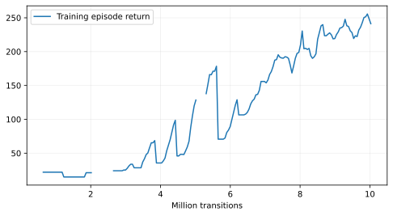

This state-only diagnostic follows the 20M transfer run that lifted the cube on about 99.5% of held-out episodes but never transported, placed or released it. That run used a unit-amplitude distance reward, which yielded little incentive to move a lifted cube away from the source.
transfer_transport reward raises the lifted transport term to 2 + 6 exp(-distance / 0.06). This isolates the observed failure stage; physical success criteria, action bounds, task geometry, and ±20 mm reset jitter remain unchanged. No RGB run should use this revision unless privileged evaluation shows transport learning.Status: completed_diagnostic · 10,027,008 / 1,000,046,592 transitions · Slurm job 51681681.

| Transitions | Seed | Physical success | Failure stage counts | Data |
|---|---|---|---|---|
| 2,015,232 | 30000 | 0/512 (0.0%) | {"no_lift": 406, "not_placed": 106} | Raw evaluation |
| 2,015,232 | 31000 | 0/512 (0.0%) | {"no_lift": 392, "not_placed": 120} | Raw evaluation |
| 5,013,504 | 30000 | 19/512 (3.7%) | {"no_lift": 74, "not_placed": 419, "success": 19} | Raw evaluation |
| 5,013,504 | 31000 | 7/512 (1.4%) | {"no_lift": 85, "not_placed": 418, "not_settled": 2, "success": 7} | Raw evaluation |
| 10,027,008 | 30000 | 9/512 (1.8%) | {"not_placed": 502, "not_withdrawn_or_held": 1, "success": 9} | Raw evaluation |
| 10,027,008 | 31000 | 14/512 (2.7%) | {"not_placed": 494, "not_withdrawn_or_held": 4, "success": 14} | Raw evaluation |
The diagnostic uses 512 episodes at each of 2M, 5M and 10M transitions, on two held-out seeds. It is not an RGB camera comparison. If the new reward still produces no transport, the next experiment must change the task/control curriculum before the 1B visual runs.